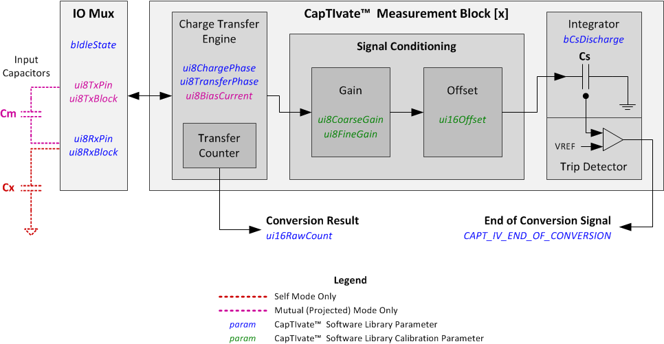
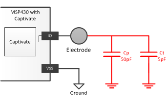

Conversion Gain and Conversion Count are the fundamental parameters used to establish the performance of the sensor. These parameters determine the resolution, sensitivity, and required conversion time. They are the inputs to the calibration algorithm, which identifies the correct coarse/fine gain ratios, offset scale, and offset level for each element at runtime.
Quick Reference
1. To increase resolution, increase the Conversion Count.
2. To increase sensitivity, increase the Conversion Count OR decrease the Conversion Gain.
3. The Conversion Count value establishes the conversion time, as it specifies the approximate number of charge transfers per conversion.
4. The Conversion Count value must be equal to or larger than the Conversion Gain. When the two values are equal, the minimum amount
of offset subtraction is applied.
Background
The CapTIvate peripheral has the ability to apply gain as well as offset to the capacitance being measured.
When a conversion is started, the unknown external capacitance being measured is charged to a known voltage. The charge on that
external capacitor is then transferred into a sample capacitor which is on-chip. The conversion result is the simply the number of
charge transfers from the external capacitor to the internal sample capacitor that are required to "fill up" the internal sample capacitor.
The number of transfers needed to do so is representative of the capacitance of the external electrode being measured. The signal chain
is shown below.

The gain stage of the CapTIvate peripheral provides the ability to scale the effective size of the unknown external capacitor relative to the internal sample capacitor. This serves two main purposes. First, it allows the peripheral to handle a wide range of capacitances. Second, it allows for the designer of the system to dial in a desired measurement resolution.
The offset stage of the CapTIvate peripheral provides a mechanism to remove a set amount of charge during each charge transfer. This charge is typically associated with the parasitic capacitance of the sensor. Parasitic capacitance can be thought of as an unwanted DC offset in the measurement. For example, if an electrode has an inherent parasitic capacitance of 50pF, and a touch on that electrode adds 5pF, the capacitance goes up by 10%. This model is shown below.

However, if charge associated with the parasitic capacitance was subtracted off such that the inherent parasitic capacitance of the electrode appeared as just 10pF, then a 5pF touch would increase the capacitance by 50%. This provides an increase in sensitivity to touch or proximity.
Conversion Gain Definition
The Conversion Gain parameter specifies the desired number of charge transfers in the conversion before offset subtraction is applied.
The runtime calibration algorithm will adjust the gain stage for each element (making the external capacitor look larger or smaller relative to the
internal sample capacitor) until the gain ratio is identified that gets closest to the number of charge transfers specified by the Conversion Gain parameter.
Conversion Count Definition
The Conversion Count parameter specifies the desired number of charge transfers in the conversion after offset subtraction has been applied. Since offset
subtraction removes charge from each charge transfer, whenever the offset subtraction amount is increased, more charge transfers will be required in order to
fill up the internal sample capacitor. The runtime calibration algorithm will first identify the gain ratios based on the conversion gain parameter, specified
above. Then, it will begin increasing the amount of offset subtraction until the number of charge transfers in the conversion gets as close to the Conversion
Count parameter as possible.
Relationship Between Conversion Count and Gain
The Conversion Count specifies the approximate measurement result (or "count"), which is equivalent to the number of charge transfers that are required to fill
up the internal sample capacitor. If this value is held constant, reducing the Conversion Gain has the effect of increasing the amount of offset subtraction
that is applied. This has the effect of increasing sensitivity to touch without increasing the conversion time.
Note that the Conversion Count value must be equal to or larger than the Conversion Gain. When the two values are equal, the minimum amount of offset subtraction is applied.
Implementation Notes
A typical Conversion Gain value that works well for a variety of applications is 200. This value can be decreased to 100 to apply additional
offset subtraction, or it may be increased to apply less offset subtraction.
A typical Conversion Count value that works well for a variety of applications is 500. Button group sensors will often not need this much resolution, and can have their Conversion Count reduced. Slider, Wheel, and Proximity sensors may require additional, and may need their Conversion Count increased accordingly to provide it.
Range of Valid Values
The conversion gain may be set anywhere between 100 and 8191. The default is 200.
The conversion count may be set anywhere between 100 and 8191. The default is 500.
Affected Software Parameters
The Conversion_Gain parameter corresponds to the
ui16ConversionGain
member of the
tSensor
type in the CapTIvate Touch Library.
The Conversion_Count parameter corresponds to the
ui16ConversionCount
member of the
tSensor
type in the CapTIvate Touch Library.